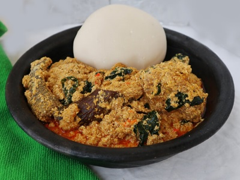
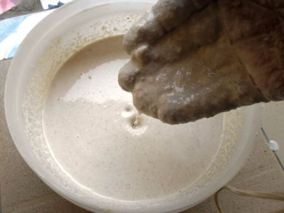
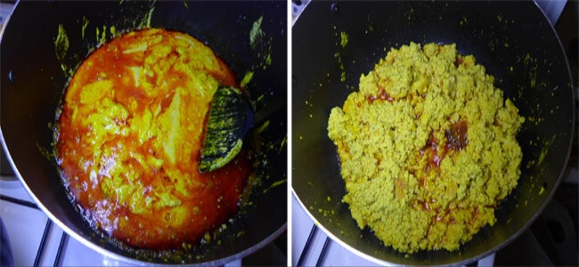
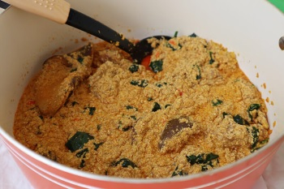

Egusi soup is unarguably the most popular Nigerian soup. In my few years a Nigerian food lover, I have learned that different recipes exist across different Nigerian ethnic groups.
The Yorubas make efo elegusi while the Igbos make ofe egusi, all with similar ingredients but with slightly different approaches.This is how to make egusi soup with lumps… the kind you only get to eat when you visit a 5-star restaurant or hotel 😀.

Like I stated on the introductory page; Nigerian egusi soup is the most popular around here.
What you find below is a delicious plate of egusi soup and fufu, a popular Nigeria combination.
Ingredients For Egusi Soup
Serving: 12
Preparation time: 80 minutes
- 1KG or 2.2lb beef
- 4 cups of egusi (melon)
- 1lb or 500g Roasted fish
- Half a cup of ground crayfish
- A handful of sliced ugu (fluted pumpkin) leaves
- 2 seasoning cubes
- Salt to taste
- Pepper to taste (scotch bonnet)
- One medium-sized Stock fish head (okporoko)
- 20g Dawadawa or opkei (local ingredients)
The above-listed ingredients will make a large pot of egusi soup. See the bottom of this page. This soup will serve a family of 4 persons three times. You can always refrigerate leftovers.
This recipe shows you how to prepare Egusi soup with lumps, the kind you only find in posh restaurants and eateries.
Preparation
Step 1
Grind the four cups of egusi with a dry blender or hand-grinding machine and set them aside in a bowl. Add about a cup of water to it and stir to make a very thick paste, as you can see below.

Step 2
Parboil the meat with all the ingredients, it is advisable to parboil meat with some ingredients before adding them to the principal food, this improves the taste of the meat.
Step 3
Parboil for about ten minutes, then add water and cook till the meat is tender and the stock (water) is about to dry. Use two seasoning cubes, a teaspoon of salt and a half cup of sliced onions.
Step 4
Pour hot water over the stockfish in a bowl and wash thoroughly to remove sand, then set aside. Also, remove the center bone from the roasted fishes, wash and set aside too.
How to make Egusi Soup with Bitterleaf
Step 5
Set your cooking pot on the fire and add 300ml of palm oil (red oil), allow to heat for a minute but don’t allow to bleach. Add the egusi paste and keep stirring for the next eight to ten minutes to form seed-like crumbs. See the image below.

Then transfer the already cooked meat into the pot, stir.
Step 8
Add the washed dry fish, stockfish, ground crayfish, a seasoning cube, ground scotch bonnet pepper, and 2 cups of water. Then cover halfway and allow boiling for the next ten minutes.

Step 9
Stir occasionally to avoid burning. One spoon of ground dawadawa (local ingredients), and a taste for salt and pepper.
Add a handful of sliced utazi leaves.
Allow to simmer on low heat for 2 minutes, stir, and you just made a delicious pot of egusi soup
How to Serve Egusi Soup
This is how you make the best Egusi soup with lumps, the kind you only find in posh restaurants and eateries. 😀.
You can serve with eba or fufu, in fact, any of the Nigerian swallows will make an impressive combination.
I also enjoy eating this soup and pounded yam together.
A combination of
Ofe Egusi and Pounded yam would be perfect for lunch.